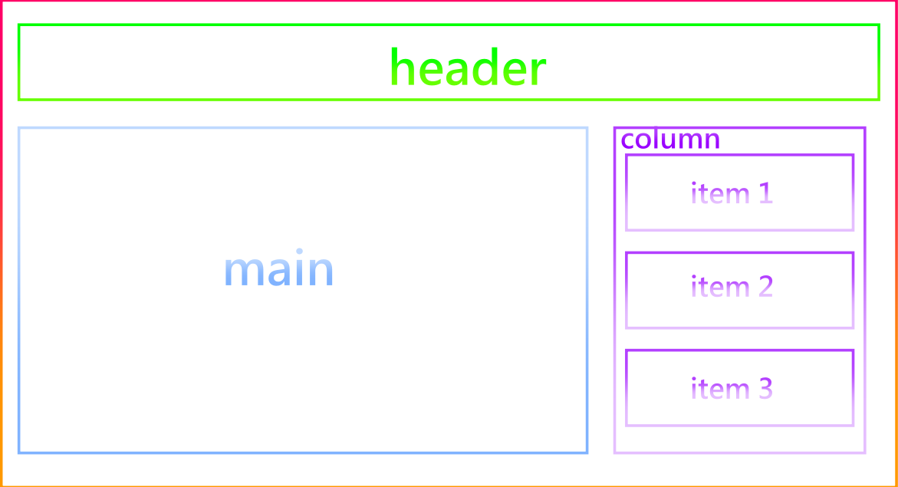

vue元件的介紹
本章介紹元件及相應的用法
元件聽起來很抽象，但是以白話來說的話就是將每個區塊給分開管理。
每個區塊都有各自的模板、樣式、功能並且可以被重複利用，也就是有可複用性。
拿HTML結構來說，我們會將網頁結構分成header、content(main)、footer的概念是相似的，只不過換成了js而已
元件化的原因
思考一下我們將網頁結構分成三個大區塊的原因是甚麼?
最大的原因就是因為便於管理，讓各個區塊發揮該有的功能。
拿head來說，head通常是放置nav也就是連結至各分頁的選單。
因此每當我們要修改分頁連結時，基本上都只會對head進行修改，而不是對main。因為該功能是屬於head。
而這正是元件的概念之一，甚麼區塊負責甚麼功能。當然這只不過是元件其中之一的特性而已。
元件的特性
-
增加程式碼的可複用性 -
便於管理修改 -
元件功能獨立化
增加程式碼的可複用性
vue元件除了區塊各自管理外，甚至可以在兩個不同的地方使用同一個元件，也就是說你只要撰寫一次程式碼你就可以使用在兩個地方。
而這就是可複用性，撰寫的程式碼不是單單只用於某一個區塊而是有些通用性。如此一來便可以簡化程式碼，避免檔案大小過大及code數太長的問題。
便於管理及修改
接續上面所說明的功能，元件通用性讓元件可以應用於不同的區塊，這也就說明了兩個區塊是共用著一個元件。
那麼當我們有修改功能的需求時，我們只要修改一個地方就好，不需要再將每個區塊的程式碼在拿出來一一修改。便於管理就是說這部分。
元件功能獨立化
顧名思義，就是每個元件有每個元件的獨立功能。
假設有個側欄需要每隔一段時間就打一隻api來更新列表，代表我們要更動的部分只有側欄，其他部分不需要有任何操作及變動。
如此我們只要在側欄元件進行api的操作，就不需要所有的程式碼都同步的進行更動而造成記憶體的佔用。
另外每一個元件的資料都是各自獨立的。
假設今天head元件有一個num的變數，其變數的值是10。但我在footer也有一個num的變數是100，兩者若不串接，資料是不會相通的。也就不會造成變數衝突的可能。
ps.雖然兩個元件之間的資料是獨立的，但不代表無法進行傳遞及串接。這部分請看後續的說明。
註冊元件
說明元件的傳遞之前，我們得先了解元件是如何建構和使用的。
首先當我們要使用元件時，就需要去建立元件，這個動作被稱為註冊。而註冊元件有幾個要點需要去注意及了解。
-
元件結構與根結構基本上無異，只差在template屬性及props屬性。 createApp其實就是一個大元件，通常被稱為根元件。其他元件都是依附在根元件底下，我們這裡稱呼為子元件。
根元件及子元件同為元件自然也就不會有待多的差別，子元件只比根元件多個template屬性及傳遞用的props屬性，其他的功能與根元件並無差別。
-
元件需要指定一個名稱。 子元件可以有很多個，每個元件都有每個元件不同的功能，所以我們需要藉由命名來區分這些元件並加以使用。
-
元件需要放置在createApp後mount前 子元件都是依附在根元件底下，而我們要決定根元件要使用那些子元件時就必須將子元件插入在兩者之間。
-
元件可以溝通傳遞，共分為兩個模式。props及emit。 元件之間是可以進行資料傳遞的，分別為props由外部向內傳遞以及emit由內部向外發送。
props及emit的用法有一些區別。props是資料傳遞，而emit雖然也可以傳遞資料，但本身其實是事件。
註冊元件js範例:
let app = Vue.createApp({//主元件 data(){ return{ text:'測試文字',//此變數會使用props傳遞到子元件 } }, methods:{ wrap_fn(inside_data){//此function會在受到子元件驅動後觸發 console.log(inside)//inside_data則是子元件所發送的資料 }, } }) app.component('item',{//元件名稱為item template:`<div> {{inside_text}} </div>`, props:[inside_text], //子元件接收其他元件的接收變數，外部傳入的資料會加入到指定變數中。數量可以有複數。這裡的變數在接收以後就等同於跟test變數一樣是歸屬在data內的變數。 //ps.除了陣列外，亦可使用物件來接收變數。使用物件來承接變數大多都是用來對接收資料做型別驗證。 data(){ return{ test:'內部文字',//前面有說過各個元件的資料是不會衝突的，但為了好釐清這邊我們就不使用重複的變數以免容易搞混。 } }, methods:{ inside_fn(){//內部的function 當觸發inside_fn的時候，觸發$emit這個function $emit('add',this.test);//將觸發外層事件並將test資料傳遞至外層事件內 }, } }) //元件在mount前createApp後 app.mount('#id');
註冊元件HTML範例:
<body id="id"> <item inside_text="text" v-on:add="wrap_fn"> //這邊有個口訣"前內後外"。意思是不管是props還是emit前面的變數(事件)為子元件，後面的則是外部接收(傳遞)的元件 //inside_text 為item元件的變數 text則是外部傳遞下來的變數資料 //v-on:add 是我們在js$emit('add')所命名的事件名稱歸屬於子元件，"wrap_fn"則是外部元件的function 當add觸發時會將資料給帶到wrap_fn的參數中並且觸發wrap_fn </item> </body>
全域註冊及區域註冊
介紹完基本的元件註冊，那我們可以來了解區域註冊與全域註冊了。
全域註冊與區域註冊元件的差別在於，全域註冊是所有的元件都可以掛載指定子元件。常用於中小型的專案
而區域註冊則是指能夠在指定掛載的元件上應用，其他的元件使用區域元件標籤時並不會有任何的效果及事件呈現及觸發。通常會搭配vue cil來寫較大型的專案
全域註冊的方法
其實剛才所示範基本的註冊方法正是全域註冊，所以只要了解剛才的範例，那就學會了全域註冊。
區域註冊
區域註冊跟全域註冊的方法有一些不同，但大部分來說還是一樣的。
首先得在非Vue元件內建立一個物件，物件的內容就是元件
const element = {
template:'',
props:[],//其實若沒有要傳輸資料，props就不需要。
mthods:{
...
},
}
接著只需要在Vue元件新建一個components的object並將上方物件給加入到物件內即可
Vue.createApp({
data(){
return{
}
},
components:{
element,//利用es6的方法將物件加入components的物件中
}
})
如此element的元件就可以在指定的元件中生效。而元件標籤名稱則是element
ps.若需要在非根元件使用區域註冊，那麼在template的內加入元件名稱的標籤即可
補充
透過上面的案例可以看到如何使用區域註冊，而除了在原本的檔案內建立物件外，也可以透過ES模組(module)的方式來引入元件